El directorio del " holding " eléctrico Enersis , participado mayoritariamente por Endesa España , aseguró hoy que la alianza estratégica entre la Sociedad General de Aguas de Barcelona y Endesa España no es válida para Chile.
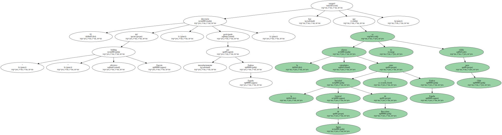Enersis salió así al paso de informaciones periodísticas que apuntaban a un pacto o alianza estratégica entre ambas para adquirir y operar empresas de servicios públicos ( principalmente agua potable ) en España y en varios países latinoamericanos , incluido Chile.
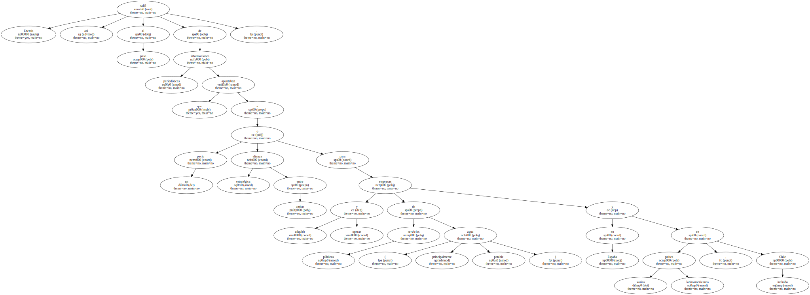En un comunicado , el consorcio eléctrico precisó que el pacto entre Endesa España y Aguas Barcelona , que fue suscrito en 1994 y que dio origen a la constitución de la sociedad Interagua , " no supone acuerdo de actuación conjunta entre la Empresa Metropolitana de Obras Sanitarias ( EMOS ) y Enersis ".
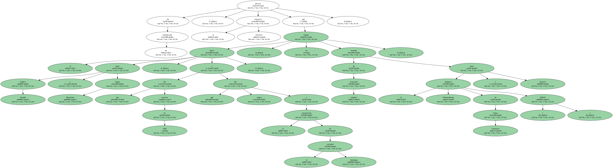EMOS es la empresa que presta servicios de agua potable a casi toda la capital chilena y está constituida a partes iguales por la española Aguas Barcelona y la francesa Suez Lyonnaisse des Eaux.
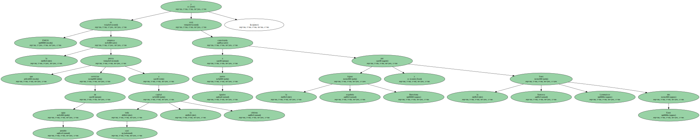" Según las informaciones recibidas de Endesa España , matriz de Enersis , el acuerdo antes mencionado no constituye pacto de actuación conjunta en Chile , porque es evidente que Interagua no opera en este país " , subraya la nota.
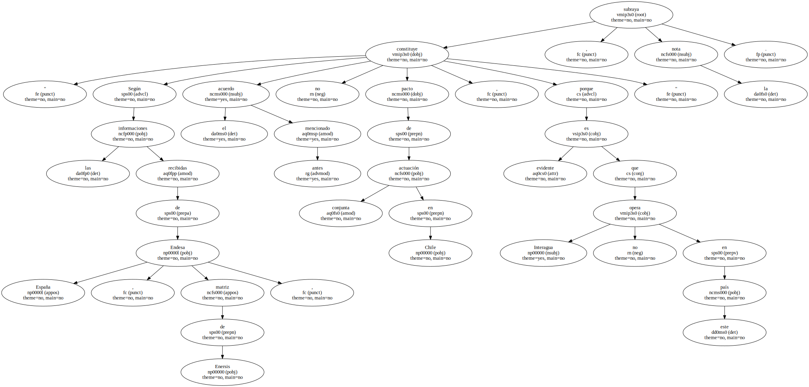Tras conocerse públicamente la supuesta alianza , el superintendente de Servicios Sanitarios , Juan Eduardo Saldivia , informó el pasado Martes que solicitará datos a Aguas Barcelona respecto de la existencia y contenido de dicho trato.

Las empresas Agbar y Suez Lyonnaisse des Eaux - que conformaron el consorcio Aguas Metropolitanas - se adjudicaron el 42 por ciento de EMOS el 11 de junio pasado a cambio de 964,1 millones de dólares.
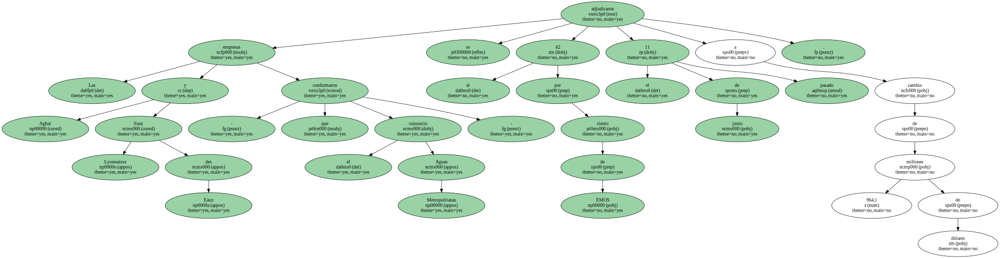El 14 de septiembre del pasado año , la sociedad hispano-francesa asumió formalmente la gestión de la compañía , la principal de Chile y que abastece de agua potable a 1.124.000 hogares de Santiago.
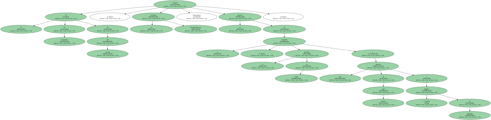Endesa España , en tanto , controla en Chile al principal grupo eléctrico ( ENERSIS ) y paralelamente tiene un 11 por ciento del capital de Aguas Barcelona , lo que le da derecho a contar con tres de los quince miembros del consejo de administración de la compañía.
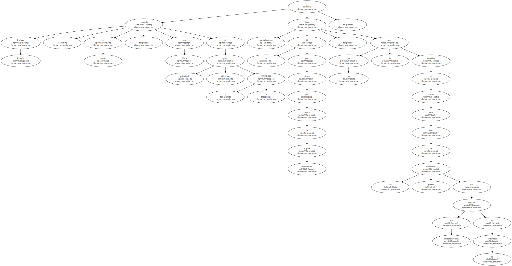Esta circunstancia , a juicio de un grupo de diputados democristianos chilenos , implica un monopolio que viola la reglamentación local.
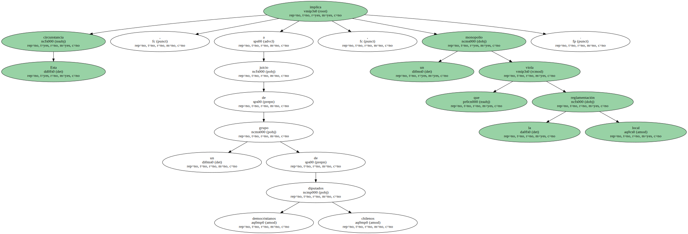Enersis dejó en diciembre pasado sin efecto una anunciada venta de la sanitaria Aguas Cordillera , a raíz de un fallo de la comisión resolutiva de la Fiscalía Antimonopolios que ya había paralizado la licitación de la sanitaria el 21 de octubre del año pasado.
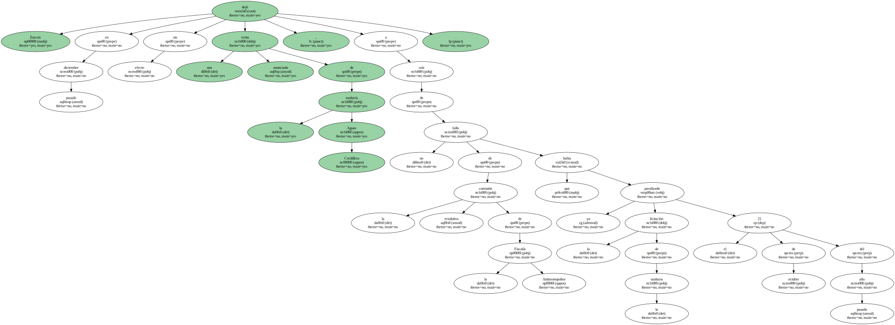La medida fue adoptada con el objeto de establecer si la operación implica eventuales riesgos de concentración monopolística en el sector sanitario.
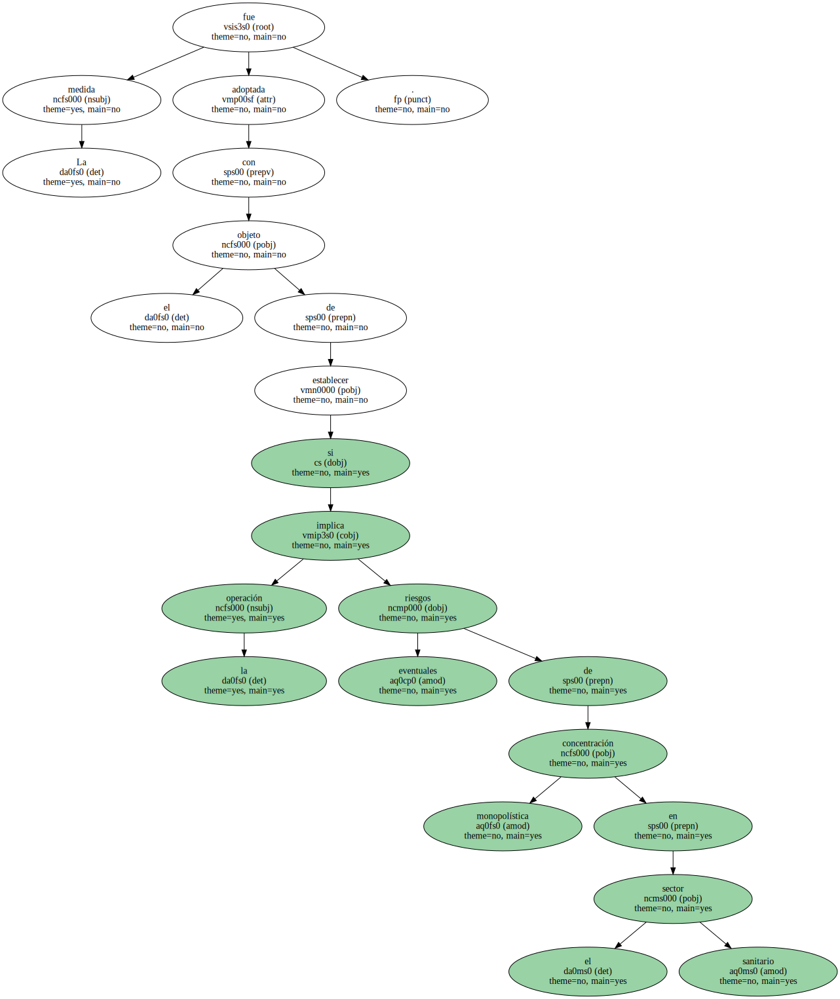Enersis recalcó en su comunicado que ha proporcionado a la comisión resolutiva toda la información que ese tribunal ha requerido y manifiesta su disposición a seguir colaborando en los trabajos de dicha comisión.
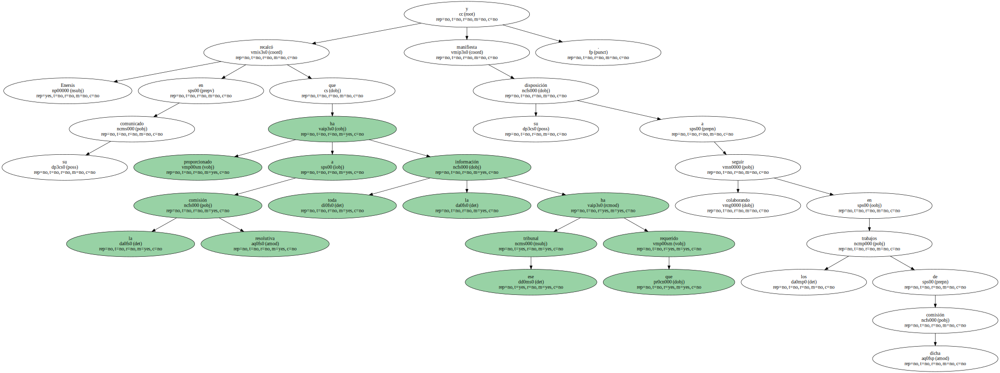" La paralización de la licitación decidida por la comisión resolutiva supone un trato discriminatorio contra quien legítimamente opta por licitar , respecto de quien decide realizar una venta directa , así como un grave menoscabo del derecho de propiedad " , afirma la filial de Endesa España.
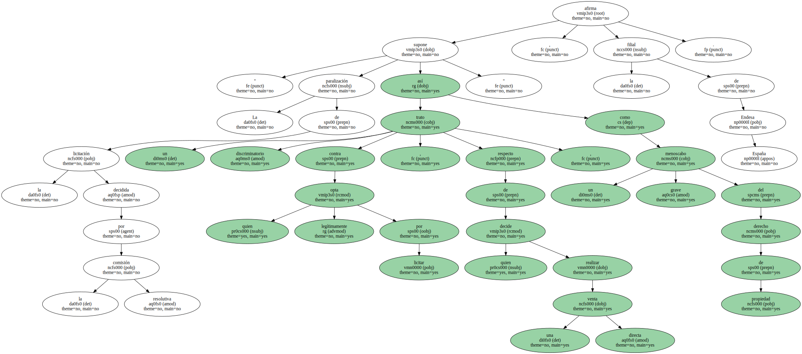A la vista de estos antecedentes , Enersis reitera su decidido empeño en " la protección de los intereses de la sociedad y de todos sus accionistas , para lo que empleará cuantos medios legales tenga a su alcance ".
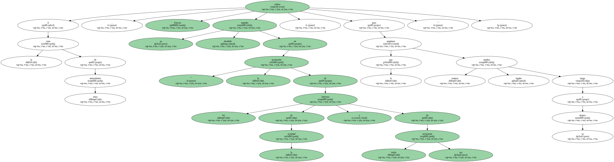